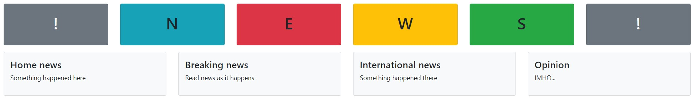
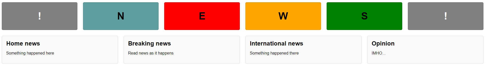

Assignment
Part 1
- Open the file bs4_page.html in a browser and in a text editor.
- Link in the Bootstrap 4 CSS file by using an HTML link element in bs4_page.html.
- Assign the elements in file bs4_page.html to Bootstrap classes in order to achieve the layout in the following picture:

Rules:
- You must not make any changes to the HTML file except for typing in class names.
Tips:
- Remember that an element can be assigned to more than one class (e.g. class="some-class some-other-class").
Part 2
- Open the file flex_page.html in a browser and in a text editor. This file has the same structure as bs4_page.html.
- Modify the file flex_page.html to achieve the layout in the following picture:

Rules:
- Do not create any new files.
- Do not modify the CSS rulesets already defined in the script element of file flex_page.html.
- You may add CSS rulesets to the script element in flex_page.html.
- You may assign the HTML elements to classes but must not make any other modifications to the HTML content.
Tips:
- Use the classes defined in the script element of flex_page.html to add colours to the elements.
- Use flexbox to lay out each row and contained elements.
- Use CSS property padding to create some space around the 'cards'.
- Use CSS properties font-size, margin and text-center to style the text inside the 'cards'.